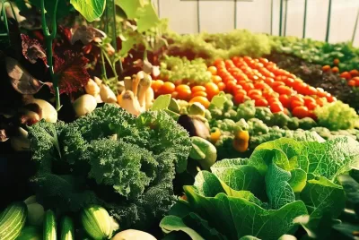

Nourish your body with the most nutrient-packed veggies and herbs.
Not only do you save money on expensive produce at the supermarket. You also save money on gas, parking, and packaging.
No one can argue that your own yard is as fresh and local as it gets. And since your food is just steps away, you can pick your vegetables at peak ripeness (and peak nutrition).